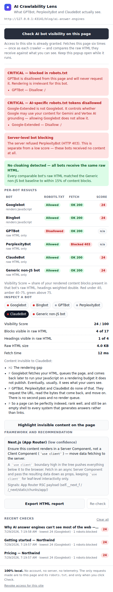
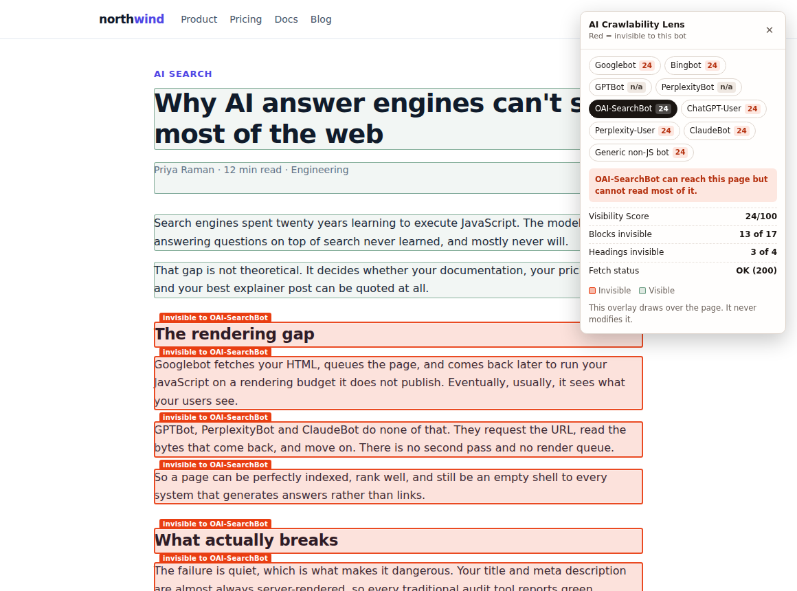

Googlebot renders your JavaScript. GPTBot, PerplexityBot and ClaudeBot don’t.
Your page can rank in Google, pass every SEO audit, and still be invisible to ChatGPT, Perplexity and Claude — because those crawlers only read raw HTML. This fetches your page as each one and shows you exactly what never reaches them.


What it checks
- Per-crawler visibility — the page fetched with each crawler’s real User-Agent and a plain-UA baseline, diffed against what you actually see.
- robots.txt blocking — including
Google-Extended, the AI-usage token that is separate from Googlebot and that almost nobody knows about. - Server-level bot blocking — a 403 to GPTBot specifically is reported distinctly from a low score.
- Cloaking — whether your infrastructure serves different HTML to different crawlers.
- Framework-specific fixes — Next.js Pages vs App Router, Nuxt, Gatsby, SvelteKit, Remix, Astro, Angular and plain SPAs.
Why it isn’t another CSR/SSR detector
“Is this server-rendered?” is a crowded question with a dozen answers. “Can GPTBot read this specific page, is it blocked in robots.txt, and does my CDN serve it something different?” is a different question, and it is the one that decides whether an AI answer engine can cite you.
There are no performance metrics here on purpose — no TTFB, no LCP. Every other tool already does that.
Install
No build step and no dependencies. Clone it and load it unpacked:
git clone https://github.com/bobadesiddesh1-cmyk/ai-crawlability-checker.git # chrome://extensions → Developer mode → Load unpacked # → select the ai-crawlability-lens/ folder
Walk through the interface without installing anything.
Privacy
Nothing is collected, nothing is transmitted, and there is no server. The only requests
made are to the page you are on and its robots.txt, and only when you click
Check. Site access is requested per-site at the moment you click — never for all sites
at install. Full policy.
Manifest V3 No build step No telemetry MIT